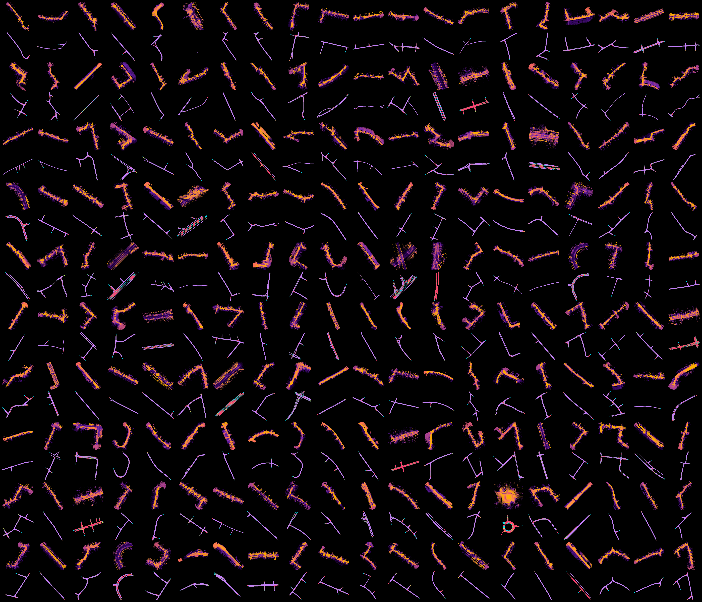

多地点实景点云数据
KITTI-360、WHU-3D、Toronto 3D 等公开数据，与合肥、南京、新加坡实地采集共同构建场景模型库。

CRSLP Dataset · 2026
CRSLP Dataset 是第一个面向路侧协同 LiDAR 优化布设方法测试的大规模虚实融合数据集， 包含 13 个地点、超 100 个交通场景、900 余组布设方案及对应的 IoU 序列数据， 并提供部分场景的连续点云数据序列与 GT-BBox 标注。
DOI: 10.6084/m9.figshare.32358363 · PDF 文档
基于公开数据集与实地采集点云构建，覆盖多地点、多场景的路侧协同感知布设评测。 点击任意卡片可查看大图或播放视频。
KITTI-360、WHU-3D、Toronto 3D 等公开数据，与合肥、南京、新加坡实地采集共同构建场景模型库。

超过 900 组路侧 LiDAR 布设方案的协同感知 IoU 统计分布。
从场景建模、轨迹注入到多 LiDAR 感知评价的完整流程。
同一路网下多交通流与多雷达配置的点云仿真。

协同 IoU 与多种替代指标之间的相关性分析。

多种替代指标在不同地点与布设方案下的表现对比。